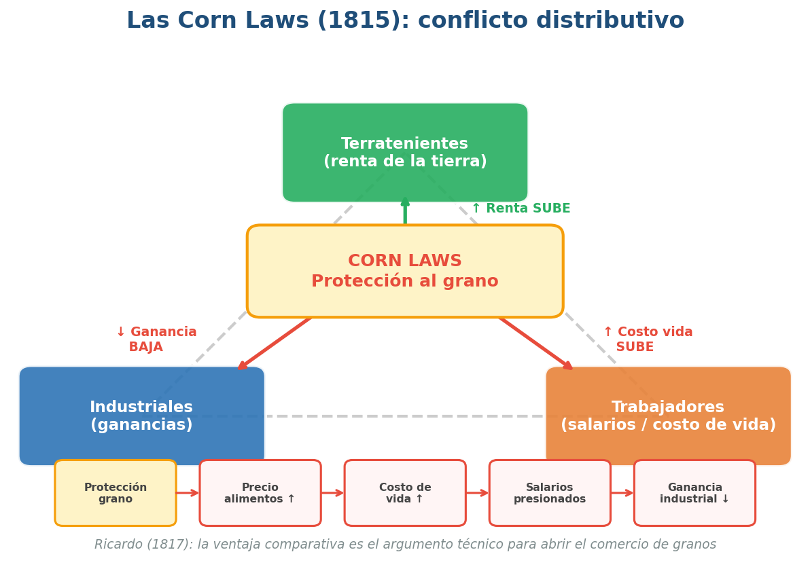
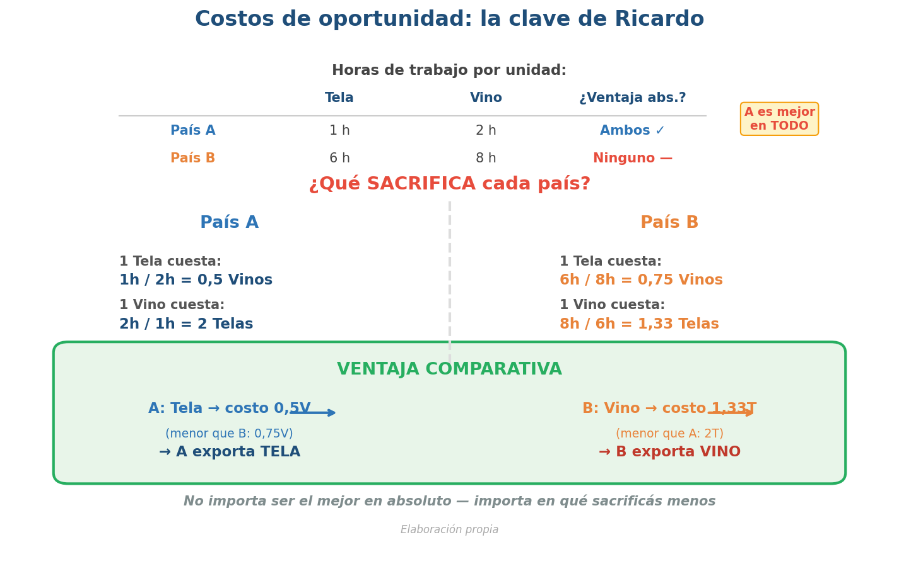
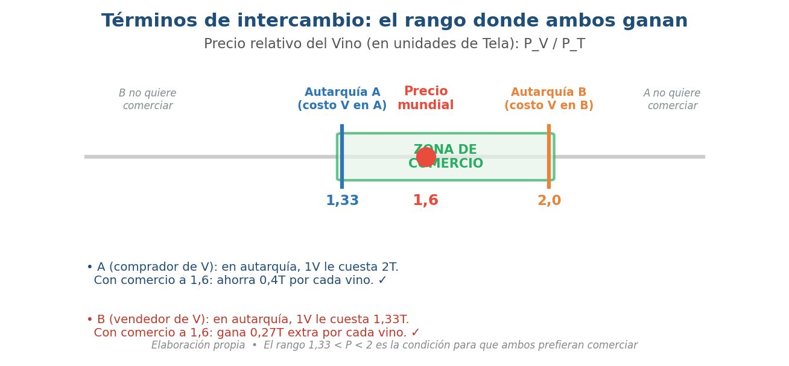
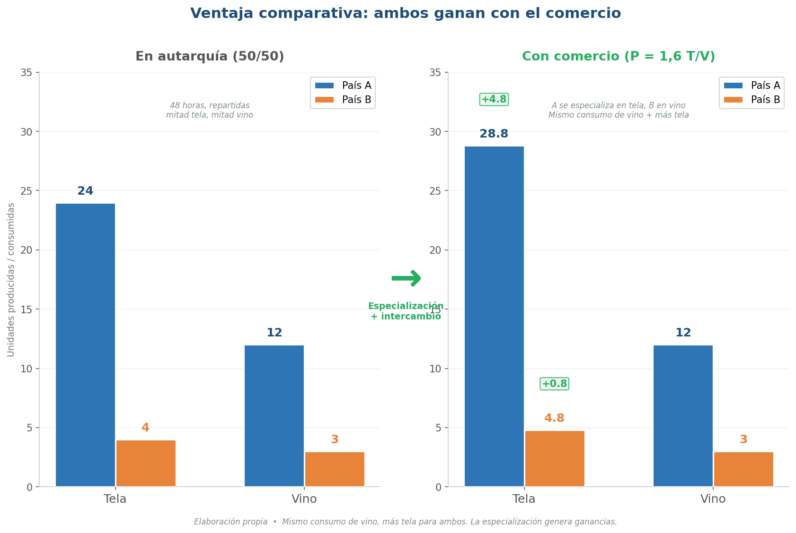
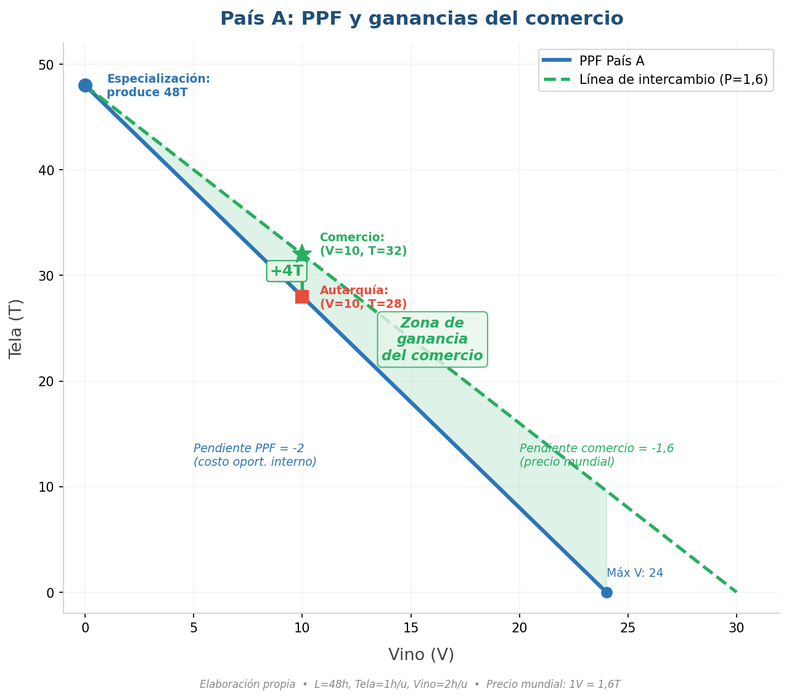
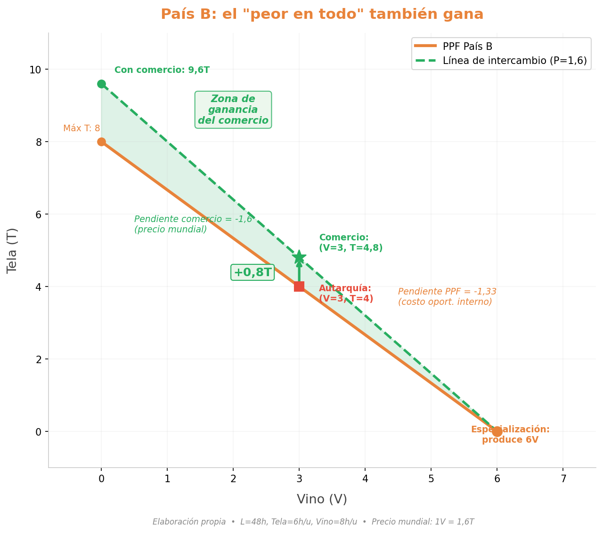
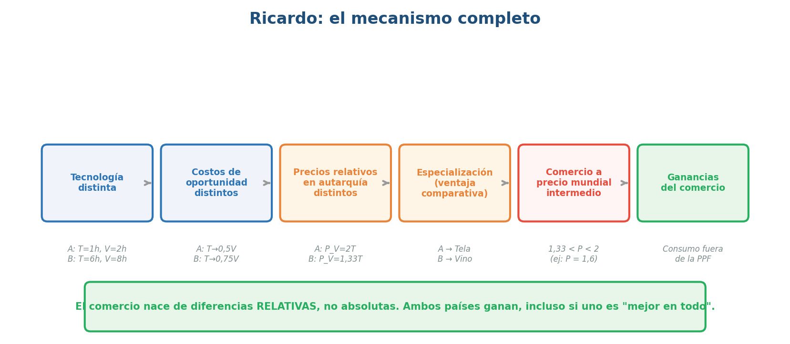
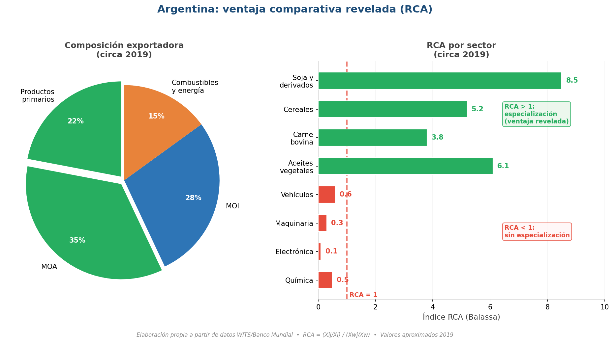

Economía Internacional — Clase 4
Ricardo y la ventaja comparativa: costos relativos, no absolutos
UMET - Licenciatura en Economía | 2026
¿Recuerdan el problema de la clase pasada?
- A: Tela = 1 hora, Vino = 2 horas
- B: Tela = 6 horas, Vino = 8 horas
- A tiene ventaja absoluta en ambos bienes
- Smith no puede explicar por qué B exportaría algo
- Hoy: Ricardo resuelve este problema
Agenda: Ricardo y la ventaja comparativa
- ¿Quién fue Ricardo? Biografía y contexto político (Corn Laws)
- Autarquía, precios relativos y costo de oportunidad
- Ventaja comparativa: quién exporta qué (ejemplo numérico)
- Frontera de posibilidades de producción y ganancias del comercio
- De la teoría a los datos: ventaja comparativa revelada (RCA)
- Qué explica Ricardo y qué deja abierto
David Ricardo (1772-1823)
Fuente: Retrato por Thomas Phillips (1821), National Portrait Gallery, Londres
- Londres, 1772. Hijo de familia judía sefardí de origen holandés. Trabajó en la Bolsa de Londres desde los 14 años
- A los 21 se casa fuera de la fe, rompe con su familia y se hace rico por cuenta propia como corredor de bolsa
- A los 27 lee La Riqueza de las Naciones de Smith y se vuelca a la economía política
- Obra principal: Principios de economía política y tributación (1817) — distribución del ingreso entre renta, ganancias y salarios
- Parlamentario (1819-1823): defendió el libre comercio contra las Corn Laws
- Su argumento de ventaja comparativa sigue siendo uno de los más citados en toda la economía — 200 años después
Ricardo (1817): libre comercio en medio de un conflicto distributivo

Fuente: Elaboración propia
- 1815: tras las Guerras Napoleónicas, se aprueban las Corn Laws → protegen precio del grano
- Alimentos caros → sube costo de vida → conflicto terratenientes vs industriales vs trabajadores
- Ricardo (Principles, 1817): la ventaja comparativa es el argumento técnico para una política → abrir comercio abarata bienes clave
- Ricardo entra al Parlamento (1819): no es solo teoría, es acción política
La gran pregunta de Ricardo: renta, salarios y ganancias
El comercio no es neutral — cambia la distribución
- Ricardo organiza la economía por tres ingresos: renta (tierra), salarios (trabajo), ganancias (capital)
- Si sube el precio del grano → sube costo de vida → presión sobre salarios → cae la ganancia industrial
- Protección agrícola → beneficia terratenientes, perjudica a industriales y trabajadores
- El comercio redistribuye: importar grano barato → baja renta, sube ganancia, abarata consumo
Autarquía: el punto de partida
Cada país solo, con sus propios precios
- Autarquía = economía cerrada: todo lo que consume se produce internamente
- En autarquía, cada país tiene un precio relativo interno (determinado por su tecnología)
- Precio relativo = cuánto de un bien "cuesta" en términos del otro
- Costo de oportunidad = cuántas unidades del otro bien sacrifico para producir 1 unidad de este
- Si los precios relativos son distintos entre países → hay incentivo a comerciar
Costos de oportunidad: ¿qué sacrifica cada país?

Fuente: Elaboración propia
- País A: 1 Tela cuesta 0,5 Vinos. 1 Vino cuesta 2 Telas
- País B: 1 Tela cuesta 0,75 Vinos. 1 Vino cuesta 1,33 Telas
- A sacrifica menos para producir Tela → ventaja comparativa en Tela
- B sacrifica menos para producir Vino → ventaja comparativa en Vino
- A exporta Tela, B exporta Vino — B tiene algo para exportar
El precio mundial: ¿de dónde sale?

Fuente: Elaboración propia
- En autarquía cada país tiene su precio interno (= su costo de oportunidad): A valúa 1V = 2T, B valúa 1V = 1,33T
- Al abrirse al comercio aparece un precio mundial: un precio relativo al que ambos intercambian
- Ese precio se forma por oferta y demanda internacionales — no lo fija ningún país solo
- Para que ambos ganen, el precio debe caer entre los precios internos: 1,33 < P < 2
- Usamos P = 1,6 como ejemplo → ambos están mejor que en autarquía
Ventaja comparativa en acción: autarquía vs comercio

Fuente: Elaboración propia
- Autarquía (24 hs cada bien): A produce 24T + 12V, B produce 4T + 3V
- Con comercio: A se especializa en Tela (48T), B en Vino (6V)
- A compra 12V al precio mundial 1,6 T/V → paga 19,2T → le quedan 28,8T + 12V (gana +4,8T)
- B vende 3V al precio mundial 1,6 T/V → recibe 4,8T → le quedan 4,8T + 3V (gana +0,8T)
- Mismo vino, más tela: ambos ganan — el precio mundial intermedio lo hace posible
Frontera de Posibilidades de Producción (PPF)
Todo lo que un país puede producir con sus recursos
- PPF = combinaciones máximas de producción dados los recursos
- Con 48 horas de trabajo, la restricción es: \(a_{LT} \times T + a_{LV} \times V = L\)
- País A (Tela=1h, Vino=2h): \(T + 2V = 48\) → máx T = 48, máx V = 24
- País B (Tela=6h, Vino=8h): \(6T + 8V = 48\) → máx T = 8, máx V = 6
- La pendiente de la PPF = costo de oportunidad = precio relativo en autarquía
País A: consumir más allá de lo que puede producir

Fuente: Elaboración propia
- PPF de A: recta de (T=48, V=0) a (T=0, V=24). Pendiente: -2
- A se especializa en Tela (produce 48T) y compra Vino a precio mundial (1,6T por V)
- Línea de intercambio: T = 48 - 1,6V → más plana que la PPF
- Ejemplo: para consumir V=10 → autarquía: T=28 | comercio: T=32 → ganancia = +4 telas
- La línea de intercambio está por encima de la PPF → nuevas combinaciones posibles
País B también gana: comercio como nueva frontera

Fuente: Elaboración propia
- PPF de B: recta de (T=8, V=0) a (T=0, V=6). Pendiente: -4/3
- B se especializa en Vino (produce 6V) y vende a precio mundial (1,6T por V)
- Línea de intercambio: T = 9,6 - 1,6V → intercepto T más alto que PPF (9,6 > 8)
- Ejemplo: para consumir V=3 → autarquía: T=4 | comercio: T=4,8 → ganancia = +0,8 telas
- B puede consumir combinaciones imposibles en autarquía
Ricardo en un slide: el mecanismo completo

Fuente: Elaboración propia
- Paso 1: En autarquía, cada país tiene precios relativos internos (por su tecnología)
- Paso 2: Diferencias tecnológicas → costos de oportunidad distintos → ventaja comparativa
- Paso 3: Cada país se especializa donde su costo de oportunidad es menor
- Paso 4: Comercian a un precio mundial intermedio → ambos consumen fuera de su PPF
- Resultado: ganancias del comercio para AMBOS países, incluso si uno es "mejor en todo"
¿Cómo "vemos" la ventaja comparativa en datos?
Índice de Balassa (1965): Ventaja Comparativa Revelada (RCA)
- Ricardo habla de ventajas comparativas → pero ¿cómo las medimos?
- Béla Balassa (1965): propone "revelar" la ventaja a partir de lo que efectivamente se exporta
- \(RCA_{i,k} = \frac{X_{i,k} / X_{i}}{X_{w,k} / X_{w}}\) → participación del producto en exportaciones del país vs del mundo
- RCA > 1: el país exporta ese bien más que el promedio mundial → especialización
- RCA < 1: el país está menos especializado que el mundo en ese bien
Argentina: ¿qué revela su patrón exportador?

Fuente: Elaboración propia a partir de datos WITS / Banco Mundial
- Argentina muestra fuerte RCA en productos primarios y agroindustriales (soja, maíz, carne, aceites)
- RCA bajo en manufacturas de origen industrial (maquinaria, electrónica, automotriz complejo)
- Pregunta ricardiana: ¿es tecnología (costo de oportunidad) o es dotación de recursos + historia + política?
- El RCA cambia en el tiempo: refleja transformaciones productivas, precios y política comercial
Ricardo: motor potente, preguntas abiertas
Cada pregunta abre una clase futura
- Explica: por qué hay comercio incluso entre países muy desiguales. Mecanismo: costos relativos → especialización → ganancias mutuas
- ¿De dónde sale la ventaja comparativa si no es solo tecnología? → Heckscher-Ohlin (Clase 6)
- ¿Quién gana y quién pierde dentro del país? → Stolper-Samuelson (Clase 6), política comercial (Clase 17)
- ¿Por qué hay comercio entre países parecidos y dentro del mismo sector? → Comercio intraindustrial (Clases 7-8)
- ¿Qué pasa con costos de transporte, empresas dominantes, cadenas globales? → Firmas heterogéneas, CGV (Clase 10)
Lo que vimos hoy
- Contexto: Ricardo escribe en el debate por las Corn Laws — el comercio redistribuye
- Ventaja comparativa: lo que importa es el costo de oportunidad (relativo), no la eficiencia absoluta
- Modelo: precios relativos en autarquía → especialización → comercio a precio intermedio → ganancias mutuas
- PPF: la línea de intercambio está por encima de la PPF → ambos consumen más
- RCA (Balassa): herramienta para "ver" la ventaja comparativa en datos reales
Lecturas para esta clase
Bibliografía del curso
- Lugones, G. et al. — Teorías del Comercio Internacional: sección sobre Ricardo, ventaja comparativa y costos de oportunidad
- Krugman, Obstfeld & Melitz — Economía Internacional: capítulo 3 (modelo ricardiano, PPF, ganancias del comercio)
- Para contexto histórico: notas de Clase 3 (Smith) + debate Corn Laws
- Balassa, B. (1965) — "Trade Liberalisation and 'Revealed' Comparative Advantage" (The Manchester School)
Material complementario
Videos y documentales recomendados
- "Conociendo al capital: David Ricardo" (Canal Encuentro, 26 min, en español) — Documental argentino sobre Ricardo y su contribución a la economía política. Ideal para repasar lo que vimos hoy
- "Capitalism" Ep.3: Ricardo and Malthus (Ilan Ziv, 2014, 52 min) — Documental en profundidad con entrevistas a Piketty, Varoufakis y Chomsky. Cómo Ricardo y Malthus reestructuran la sociedad a imagen del mercado
- "The Deceptive Promise of Free Trade" (DW Documentary, 2018, YouTube, 43 min) — Crítica al libre comercio actual: la brecha entre la teoría ricardiana y la realidad de las negociaciones comerciales
- Khan Academy: Ventaja comparativa (khanacademy.org, en español, 10-15 min) — Ejercicios numéricos paso a paso para reforzar costos de oportunidad y PPF
¿Preguntas?
Economía Internacional | Clase 4